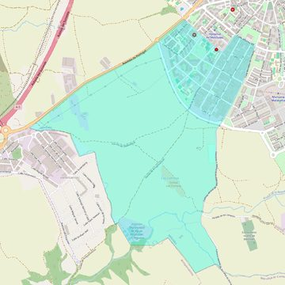

San Martín de Porres
- Arciprestazgo
- Móstoles
- Población
- Móstoles
- Dirección postal
- c/ Río Duero, 12
- Código postal
- 28935
- Extensión
- 4,46 km² (446 ha)
- Teléfono
- 916 459 884
- Correo electrónico
- sanmartindemostoles@gmail.com
- Información demográfica
- De la parroquia · De la población (Móstoles) · Del arciprestazgo (Móstoles)
- Dirección corta
- charlie-diaz-azarola.github.io/geoestadistica/p/063


Descargar mapaLímites según decreto
" Partiendo del punto de confluencia de la Avenida de Portugal con la calle Río Duero, arrancan por la calle Río Duero (en dirección sureste; ambas aceras pertenecerán a San Martín de Porres); siguen por el Paseo de Arroyomolinos (en dirección noreste; ambas aceras pertenecerán a San Martín de Porres), por el eje de la calle Alfonso XII (en dirección sureste), por el eje de la calle Moraleja de Enmedio (en dirección suroeste), por una línea imaginaria hasta el término municipal de Moraleja de Enmedio (en dirección sur), por el límite de los términos municipales de Móstoles-Moraleja de Enmedio y Móstoles-Arroyomolinos (en dirección noroeste) y por el eje de la Avenida de Portugal (en dirección noreste) hasta su confluencia con la calle Río Duero, punto de partida". (29-jun-2000)
¿Algún dato de esta parroquia es incorrecto o ha cambiado? Comuníquenoslo.